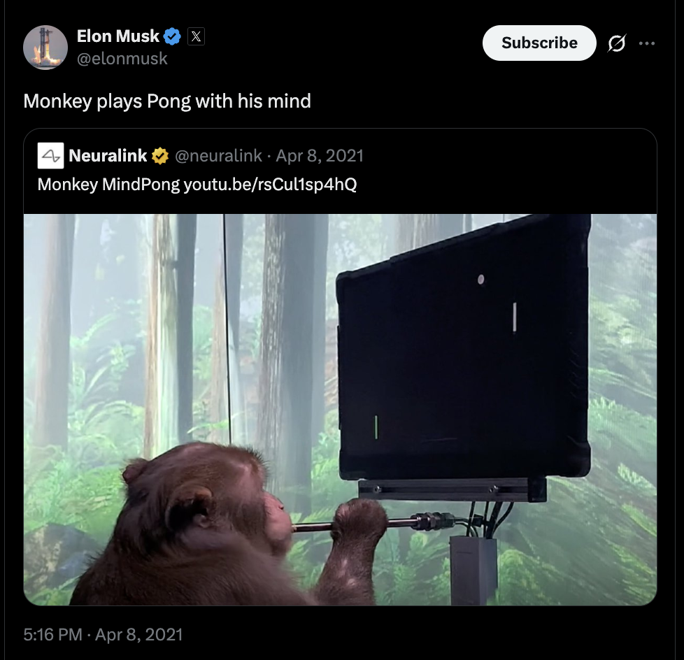
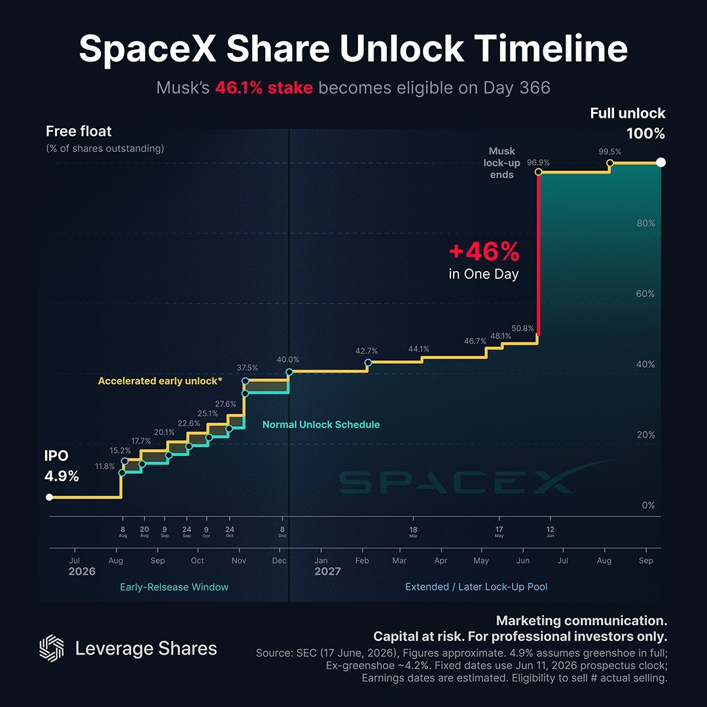
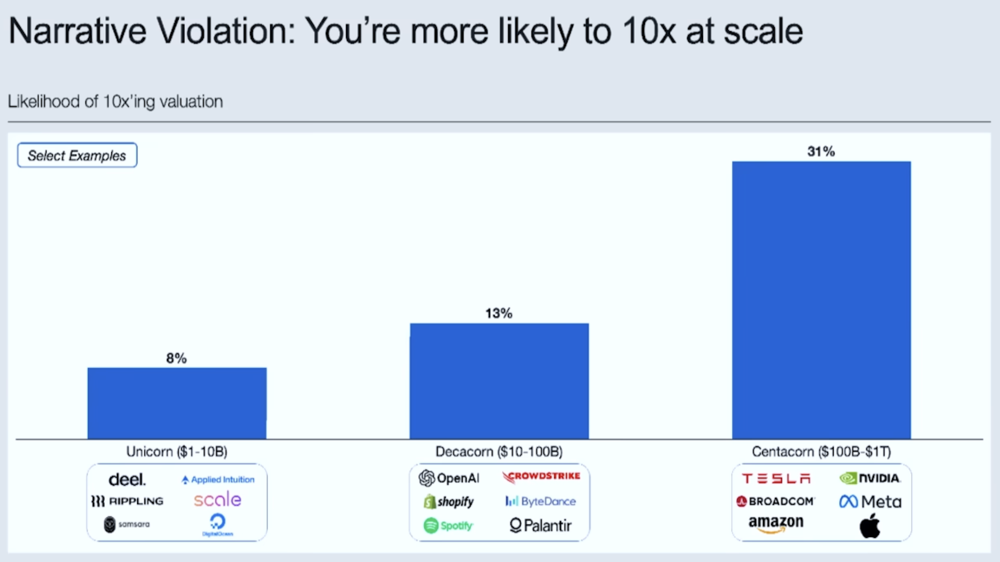
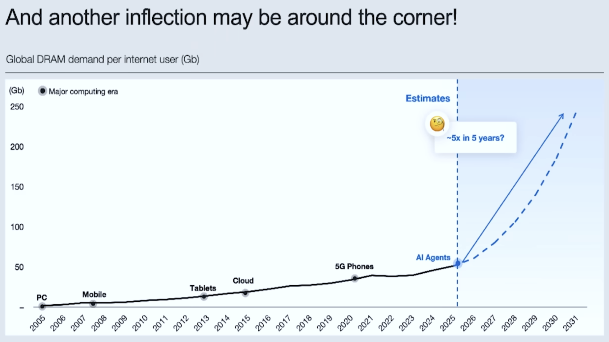

How I 4.4x'd My Portfolio: Elon, SpaceX, and Optimism
I've always been a huge fan of Elon. Ever since 2012 when I was in high school, in my economics class, we had a stock investing simulation portion where we logged on to MarketWatch and had to paper trade into various stocks. I put all my paper money into Tesla, at the time I had a classmate — let’s call him Barl — who laughed at me because he thought electric cars were never going to make it. Joke was on him: by the end of 2013, TSLA stock had roughly 4.4x'd in one year.
I'm not sure what it was but I was obsessed with listening to Elon speak. I've always enjoyed socializing with the awkward nerds in my class, especially those that saw things differently from everyone else. Elon was that awkward nerd in my class x 1,000,000,000,000 (trillion, literally HA). I remember in high school I would watch his interviews all night, on occasion I would even rewatch it to really try to understand how he thinks and understand the world through his lens. Interestingly at that time he was extremely popular with mainstream media, especially the left, democrats, hollywood etc. That has obviously changed but it seems like most people that think about him now have completely forgotten about the public perception of him back then. Sometimes it really bothers me when people don't understand the extent to which they are being programmed by the media. Making assumptions or having beliefs by reading headlines rather than reading a book or actually digging deep into interviews.
In the 2012 interviews the most interesting thing about Elon to me was his ability to distill huge ideas down to simple first principles dynamics. He stated that when he was in college he realized that there were a few domains he should focus on to really have a huge impact on humanity:
- The internet
- Sustainable energy — both production and consumption
- Space exploration / making life multiplanetary
- Artificial intelligence
- Rewriting human genetics / genetics
He believed the first 3 were especially important and you can see now 14 years later that his fundamental belief has not changed. Not only did he touch the first 3 but he also helped start OpenAI and xAI, and even was an early investor in DeepMind. Obviously all of these domains took off the past decade and his mark was absolutely right.
I think part of the reason why his companies have these expensive valuations has to do with his ability to understand what will change the trajectory of humankind. And a bigger part would be his ability to withstand really difficult things, extremely stressful situations, and being able to innovate under immense amounts of pressure. In 2008/09 both Tesla and SpaceX were on the brink of bankruptcy. Tesla was going through manufacturing hell. At the time, people had put down deposits for the Tesla Roadster but getting it manufactured at scale was extremely difficult. This was a huge hardware issue that shared similarity to SpaceX. SpaceX was coming off its third rocket failure, building rockets was also extremely difficult in the hardware world and in order for both companies to survive he had to reinvest his funds either to one or the other (where one would make it but the other would for sure die) or cut it in half and gamble the success of both. He chose the latter often stating the difficulty in choosing between the two was similar to deciding who should live between two of his children.
This story resonated with me as a high schooler because it changed how I saw capital. Money was not just something to save or spend. It could be deployed into value-producing systems. Watching Musk put nearly everything he had back into Tesla and SpaceX made me realize that capital, at its highest use, is oxygen for ambitious futures that otherwise might never exist.
Since then Tesla and SpaceX both have seen tremendous success. Tesla is one of only two major American automakers, alongside Ford, to avoid bankruptcy, while GM and Chrysler both went through bankruptcy restructurings during the financial crisis. SpaceX has not only manufactured rockets at scale; it has also innovated in ways many once thought impossible:
- Reusable rocketry
- Starship/Raptor
- Starlink launch-network
- Autonomous landing
If SpaceX, Starlink, and xAI become increasingly integrated, the long-term direction becomes obvious: more orbital infrastructure, more autonomous network optimization, and eventually more serious conversations about space-based compute and energy.
The fascinating thing is that this is just two of his companies, there's also huge innovation going on in Neuralink. Something that I will always remember is seeing a monkey playing pong with its brain on twitter.

So SpaceX IPO'd last week at 1.75 trillion. Officially making Elon a trillionaire. Obviously I believe his net worth is not only warranted but it makes me extremely optimistic about the future of our species and innovation itself. I would much rather have someone, a builder, innovator, inventor become the first trillionaire rather than an investor, financier, or political government official. Regardless of how polarized his public image has become, the market response suggests that many people are still voting with their dollars in support of the companies and missions. To me, that is the more interesting signal. Public sentiment can swing wildly, but long-duration builders are ultimately judged by whether they create things that matter.
The official mission statement of SpaceX is: “Making Humanity Multiplanetary”
"You want to wake up in the morning and think the future is going to be great - and that's what being a spacefaring civilization is all about. It's about believing in the future and thinking that the future will be better than the past. And I can't think of anything more exciting than going out there and being among the stars." - Elon Musk
Private and Public Markets
From a personal financial standpoint I have not invested in the stock itself. Right now only about 4% of the supply is available which is creating a temporary squeeze. The lock-up periods below may be better opportunities for entering a position:

We are living in extremely exciting times. The key to our future is leveling up the Kardashev scale and controlling the energy output of the stars which I speak about in a few of my previous blog posts. Project Hail Mary Stripe Sessions Reflection
With the influx of AI productivity we are also seeing huge valuations in both public and private markets. Something interesting I saw was in the All-In Thomas Laffont presentation: https://www.youtube.com/watch?v=UIoV8rG_25s where he went over the acceleration of the valuation of top private startups. It seems as though capital is being ultra concentrated in these companies that are compounding fast and at scale. This is also supported by one of his slides below:

As the higher valued startups begin to go public, investors in those private companies will need to redeploy their gains back into private companies. This is good news for the tech world since these IPOs will show proof of ROI for AI startups. Luckily this revolution actually has demand which is leading to high productivity gains. Another interesting slide shows what the potential of AI agents could be compared to the past technology revolutions:

I would be surprised if 5.5x wasn't just a conservative estimate. We can see from my Stripe Sessions Reflection post and also the recent Databricks Data and AI Summit keynotes, that AI agents are creating demand in various industries. Not only are AI Agents moving faster than humans, they are making decisions on our behalf and can also spawn subagents in parallel. Once this becomes more mainstream, demand for compute could explode. Things are moving much faster and I am a huge optimist. I live and die by the quote:
“Pessimists are usually right, and optimists are usually wrong, but all the great changes have been accomplished by optimists.” - Thomas Friedman
Subscribe
Get new posts by email.